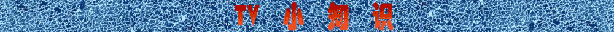
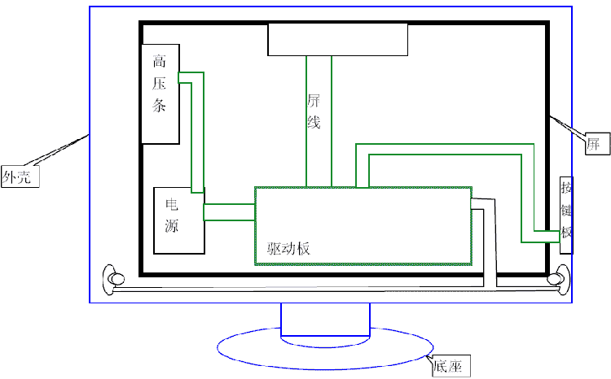
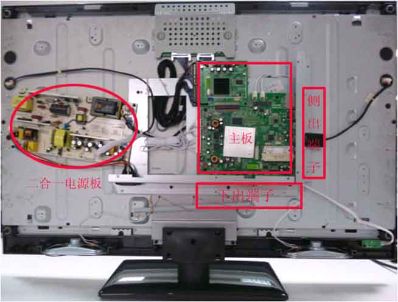
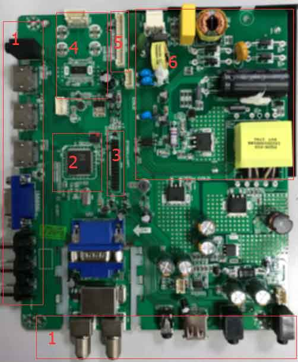

| [跳到末尾][返回主页] | |
| TV 系统框架认识 | |
| 知识模块 | （以下内容都是基于Mstar NonOS软件架构而言） |
概述：
|
|
一、TV硬件系统 1.整机框图  2.整机实际图片  从上图知道，一台电视整机主要有核心驱动主板、电源、屏、按键板、机壳、底座、喇叭等几部分构成。驱动主板是电视机的大脑，所有的动作，命令、显示和侦测都是由主板发出然后通知外设执行。我们软件需要完成的任务就是通过逻辑编程控制主板IC在对的时间处理TV事件并给出正确的命令来控制外设模块工作。由此可见，TV软件开发主要针对的是驱动主板。因此有必要了解一下主板的结构。 2.驱动主板  如上图所示，1为板卡外接端子，2为中央处理器，板卡的CPU，IC，3为屏线插座，用于输出LVDS信号给Panel，4 Audio功放模块，5按键板、红外接收头模块，6电源。 |
|
|
1.软件基本架构 int main(void) -----------------------主函数 while(1) --------------------------大循环 MApp_MultiTasks(); -----------多任务函数 MApp_TopStateMachine(); -------状态机 } } 上面为整个NonOS TV系统的主架构，由图可以看出如此庞大的一个程序，都被困在一个死循环中，不停的劳作。 主架构只是代码的提炼和浓缩，实际的代码量是很多的。接下来我们来说一下这几大模块的基本任务， 首先main()函数是整个程序的入口，不必多解释。 初始化函数负责初始化全局变量初始化，开机模式初始化（DC\AC）， Chip初始化，声音初始化，用户信息初始化，背光初始化，DDR初始化，驱动程序初始化1，中断初始化，数据区初始化，接着执行ATV服务函数，TTS初始化，播放开机音乐，加载字库，HDMI初始化，驱动程序初始化2，Panel初始化，DDC初始化，接着检查DataBase,ADC初始化，SSC初始化，TTX初始化，设置倒屏模式，接着通道初始化，DTV初始化，系统的时间信息的初始化，接着加载LOGO，ATV初始化，OCP初始化，再到环境变量初始化，OAD初始化，关闭LOGO，PVR初始化，转Source初始化，最后是一些其他的初始化。 其中红色字体初始化为接触相对较多的，所以这些初始化要着重掌握。 while(1)循环的作用是让整个程序一直运行，处于不间断的侦测，信号处理，图像处理，以及事件的响应上。 MApp_MultiTasks()函数的作用主要处理的是信号、检测外接设备等等一些底层任务处理。 MApp_TopStateMachine()是整个程序的状态机，即负责代码状态的转化，从而连接各个模块不冲突的运行，快速的做出响应。
|
|
| [返回主页][返回顶部] | |
| ※※※※※※※※※※※※※※※【札 记 分 享】※※※※※※※※※※※※※※※ | |
| 勿以恶小而为之，勿以善小而不为 | |
| 本想沉溺于莲花深处，不料翻滚于水物之间 |
| 更新日期 2018年2月8日 星期四 18:13 |
| 欢迎访问官网 www.fy2000.com 蓝天的精灵工作室 |